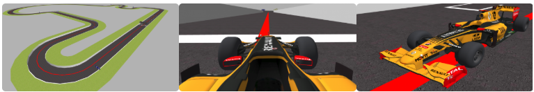

El objetivo de este ejercicio es implementar un control reactivo PID para regular la velocidad y la dirección del coche, permitiéndole seguir con precisión la línea trazada en el circuito de carreras.
A continuación, se presenta un desglose de los avances realizados día a día. Haz clic en cada día para desplegar el contenido.
Día 1
Cargando contenido...
Día 2
Cargando contenido...
Día 3
Cargando contenido...